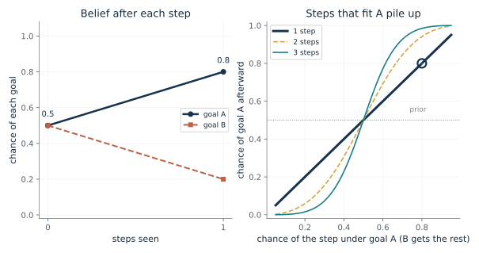
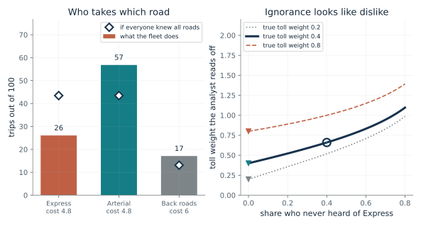
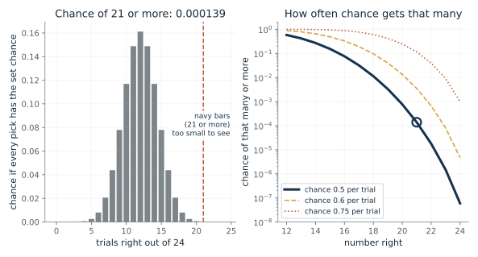
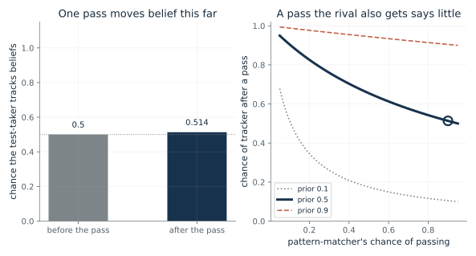
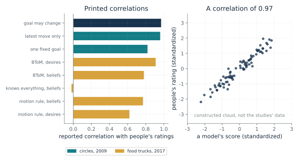
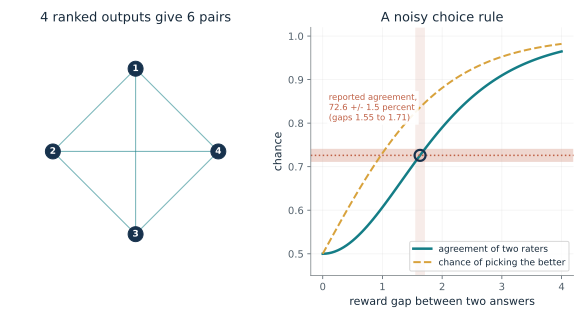

How do steps point to a goal?
From Chapter 22, Circles heading for a spot, and a model that let goals change
If one step is four times as likely under goal A as under goal B, where does belief in A land, and how fast does it grow as more such steps are seen?
Each goal starts with its prior. Every step seen multiplies that goal's score by the chance of the step if the walker were heading there. Rescaling the two scores so they add to one gives the chance of each goal. With the odds of 4 to 1 per step, the odds of A against B grow as 4, 16, 64.
Predict first: With equal priors and a step four times likelier under A, predict the chance of A after one step, and then guess whether three steps will give more than 0.95.

Chance of the step under goal A: 0.8 · Steps seen: 1 · Prior chance of goal A: 0.5
What happens: One step at 0.8 against 0.2 gives A a chance of 0.8, the chapter's number. Three such steps multiply the odds of 4 to 1 three times, giving 64 to 1, so A reaches 0.985.
Starting at 0.5 for goal A, 1 step with chance 0.8 under A and 0.2 under B give A a chance of 0.8. Each step multiplies A's score by 0.8 and B's by 0.2, so the pull compounds.
- Goal A before any step
- 0.5
- Goal A after the steps
- 0.8
- Score of A (unscaled)
- 0.4
- Score of B (unscaled)
- 0.1
A machine that reads goals from steps is only as good as its picture of how a goal produces a step. The arithmetic is simple, so the assumptions carry the weight.
In the 2009 study, the ratings of 16 people tracked a richer model that lets goals change (correlation 0.97); the fixed-goal rule used in this demonstration, which is the simplest version, scored 0.82. Either is a fit to ratings, not a finding that people multiply probabilities.
A system that reads a user's goal from their actions can apply this rule exactly, if it is given a prior and an action model. Whether those are right is a separate check.
Show the calculation
Score of A = 0.5 x 0.8^1 = 0.4. Score of B = 0.5 x 0.2^1 = 0.1. Chance of A = 0.4 / (0.4 + 0.1) = 0.8.
The equations and symbols
- g
- a candidate goal; here goals A and B
- a_1 to a_T
- the steps seen
- s_0, M
- the starting place and the known map
- P(g | s_0, M)
- the prior: the chance of the goal before any step
- P(a_t | ...)
- the chance of step t if the walker were heading for g
One goal for the whole walk, every step equally informative and independent given the goal, the prior and step chances known. The model of how a goal produces a step is an assumption; the circle study fitted people's ratings with richer planners.
Check your understanding: Prior for A is 0.2, step chance under A is 0.6 (0.4 under B), and two steps are seen. What is the chance of A?
Book source: Chapter 22, Circles heading for a spot, and a model that let goals change. Illustration C22-D01. Formula. Book formula (inverse planning by Bayes' rule) and the chapter's small example of 0.8 and 0.2 with equal priors. The repeated steps with the same chance each time, and the other priors, are the companion's constructed extension. The chapter says the example is not a result from the circle study.
Is a skipped road a dislike or never known?
From Chapter 22, A fleet that looked as if it disliked tolls
If two roads cost the same but one draws far fewer trips, does that show drivers dislike tolls?
Each route gets a cost, and its chance falls as the cost rises. At the default toll weight of 0.40 the two routes tie at 4.8, so drivers who know all three roads split evenly between them, with fewer on the costlier Back roads (at other toll weights the two do not tie: at 0.20 Express is cheapest at 4.2, and at 0.80 it costs 6.0, as much as Back roads). Drivers who never heard of Express choose between the other two. Mixing the groups leaves Express short. The analyst, who assumes full knowledge, finds the weights that reproduce these shares, and the shortfall appears as a toll weight that is too high.
Predict first: Express and Arterial both cost 4.8. If 40 percent of drivers never heard of Express, predict whether an analyst who assumes full knowledge reads the toll as costing more or less than the true 0.40 per dollar.

Share of drivers who never heard of Express: 0.4 · True toll weight per dollar: 0.4
What happens: The fleet puts 26.1 trips in 100 on Express and 56.8 on Arterial, though the two cost the same. The analyst reads a toll weight of 0.66 and an hour worth 18.2 dollars, not 30. Only the toll weight is distorted, because everyone knew both free roads.
With 40 percent of drivers unaware of Express, it draws 26.1 trips per 100 against 43.5 if everyone knew it. The analyst reads a toll weight of 0.66 per dollar and an hour worth 18.2 dollars; the drivers' true toll weight is 0.4 and the true hour is worth 30 dollars.
- Express trips per 100
- 26.1
- Toll weight the analyst reads
- 0.66
- True toll weight
- 0.4
- Hour of time, as the analyst values it ($)
- 18.2
An assistant that reads a person's detours as preferences would first need to ask which options that person knew were available. A system that logged which options each user was shown could do that; that is a proposal, not something the chapter tests.
The chapter's models of people reading each other use the same choice rule, with ratings of human observers on the other side. Nothing here measures how any person reasons about another.
The softmax is a modeling choice for noisy picking, written down exactly. It is a specification of the analyst's model, not a measurement of drivers.
Show the calculation
Costs = 0.20 x minutes + 0.4 x toll: Express 4.8, Arterial 4.8, Back roads 6. Chance of a route = exp(-cost) / sum. Fleet share of Express = (1 - 0.4) x 0.435 = 0.261. Analyst: time weight = ln(share Arterial / share Back roads) / 6; toll weight = (6 x time weight - ln(share Express / share Arterial)) / 3.
The equations and symbols
- a
- a route; Express, Arterial or Back roads
- Q
- the value of a route: minus its cost, where cost is 0.20 per minute plus the toll weight per dollar
- beta
- carefulness, taken as 1 here; zero would make every route equally likely
- unaware share
- the fraction of drivers who never heard of Express and choose only between the free roads
All drivers share the same weights and carefulness, the unaware drivers have no other difference, and the analyst fixes carefulness at 1 and assumes everyone knew every road. Nothing here is data about real drivers.
Check your understanding: If nobody is unaware (unaware share 0), what toll weight does the analyst read, and what is an hour worth?
Book source: Chapter 22, A fleet that looked as if it disliked tolls. Illustration C22-D02. Constructed example. The chapter's invented fleet: Express 18 minutes with a 3 dollar toll, Arterial 24 minutes, Back roads 30 minutes, 0.20 per minute, 0.40 per dollar, 40 percent unaware. Its 26, 57 and 17 trips per 100, the 0.66 toll weight and the 18.2 dollar hour are reproduced at the default. Other unaware shares and toll weights are the companion's variations on the same invented model.
How unlikely is 21 right out of 24 by guessing?
From Chapter 22, Understanding Another Mind (opening)
Sarah picked the problem-solving photograph on 21 of 24 trials. How often would a guesser do that, and what does that rule out?
If each pick were an independent toss with chance p, the number right would follow the binomial pattern on the left. Adding up the chance of 21, 22, 23 and 24 right gives the tail. Raising p moves the whole pattern right, and a count that is surprising at 0.5 may be ordinary at 0.75.
Predict first: Before looking, guess whether 21 of 24 by pure guessing happens about once in a hundred, once in a thousand, or once in ten thousand attempts.

Trials right out of 24: 21 · Assumed chance of a right pick per trial: 0.5
What happens: At a chance of 0.5 per trial, 21 or more right has a chance of about 0.00014, roughly once in 7,200 attempts. At 0.75 per trial it would be 0.115, so a mildly informed guesser could reach it.
If each of 24 picks had a 0.5 chance of being right, 21 or more right would have chance 0.000139. That is rare, so chance at that level fits poorly; it does not say which reading of the task explains the choices.
- Expected right by chance
- 12
- Chance of this many or more
- 0.000139
- Rate right
- 0.875
- Rate expected
- 0.5
Premack and Woodruff wrote that the experiment 'cannot itself decide among the alternative interpretations.' A tiny chance of guessing is not the same as support for any one reading.
The study was one chimpanzee. The count says nothing about what went on inside her.
The same count would apply to any system picking among two options, and would leave the same rival explanations open.
Show the calculation
Chance of 21 or more = sum over j from 21 to 24 of C(24, j) x 0.5^j x 0.5^(24 - j) = 0.000139. Expected right = 24 x 0.5 = 12.
The equations and symbols
- k
- the number of trials answered right, out of 24
- p
- the assumed chance of a right pick on each trial if the picks were guesses
- C(24, j)
- the number of ways to choose j right trials out of 24
Trials are independent and share one chance p. The real task was not like that: Sarah missed three in a row on one problem, and every trial had a structure. The calculation says only how well a flat-chance model fits the count.
Check your understanding: At a chance of 0.5, how many right do you expect out of 24, and what is the exact chance of all 24?
Book source: Chapter 22, Understanding Another Mind (opening). Illustration C22-D03. Formula. Sarah's 21 of 24 and the 'about 12' by guessing are the chapter's, from Premack and Woodruff. The exact binomial tail is the companion's own calculation; the chapter does not print it. The rates 0.6 and 0.75 are constructed comparison levels.
How much does one pass tell you?
From Chapter 22, Sarah's 21 of 24 and three rival readings
A tracker passes a standard false-belief story 95 times in 100 and a pattern-matcher 90. How far does one pass move belief that the test-taker tracks beliefs?
Bayes' rule with two types. Multiply the prior of each type by its chance of passing, then rescale. When both types pass nearly always, the two products stay close to the priors and the answer barely changes.
Predict first: Starting at even odds, predict the chance of 'tracker' after a pass on the standard story, and then after a pass on an altered story that a pattern-matcher passes only 30 times in 100.

Pattern-matcher's chance of passing: 0.9 · Prior chance of tracker: 0.5
What happens: On the standard story, with the matcher at 0.90, one pass lifts the tracker from 0.5 to 0.51. Dropping the matcher to 0.30 on an altered story lifts it to 0.76. The same pass is worth more when the rival would likely have failed.
A tracker passes the story 95 times in 100 and a pattern-matcher 90. Starting at 0.5, one pass moves the chance of tracker to 0.514. The movement depends on the ratio 1.06, so a test the rival also passes teaches little.
- Chance of tracker before
- 0.5
- Chance of tracker after one pass
- 0.514
- Pass rate ratio, tracker over matcher
- 1.06
- Tracker's pass rate
- 0.95
This is the logic of an altered test version: change the story so that a script fails while real belief tracking does not. It is also why a perfect score on a standard test can say little about how a model or a person got there.
Children were tested with the Sally and Anne story; the chapter notes researchers disagree on why young children often fail when asked directly. No pass rate here is for children.
Strachan and colleagues tested language models with altered stories and found failures, but the changes also altered the physical setup, so failure does not show that the model lacks the ability.
Show the calculation
Chance of tracker = 0.5 x 0.95 / (0.5 x 0.95 + 0.5 x 0.9) = 0.475 / 0.925 = 0.514.
The equations and symbols
- pi
- the chance of 'tracker' before the test (the prior)
- q_T
- the tracker's chance of passing; 0.95 in the chapter's example
- q_M
- the pattern-matcher's chance of passing; 0.90 on the standard story, 0.30 on an altered story
Only two rival types, a known pass rate for each, and one test with independent passes. Real models and people are not two clean types, and the study found altered versions also changed the physical setup.
Check your understanding: The prior for 'tracker' is 0.1. The matcher passes 0.3 of the time. What is the chance of 'tracker' after one pass?
Book source: Chapter 22, Sarah's 21 of 24 and three rival readings. Illustration C22-D04. Constructed example. The chapter's constructed test-takers: a tracker at 0.95, a matcher at 0.90 on the standard story and 0.30 on the altered one, with even prior odds. The other pass rates and priors are the companion's variations. The chapter says the figures are suppositions; they are not measurements from Strachan and colleagues.
What do the printed correlations say?
From Chapter 22, A student looks at the far spot and turns back
A model correlates 0.97 with people's ratings in one study and 0.78 in another. How different are those, and what do they not show?
A correlation of 0 means the model's score tells you nothing about the rating. A correlation near 1 means they rise and fall together. Squaring it gives the share of variation that lines up, which makes the gap between 0.82 and 0.97 (0.67 against 0.94) easier to feel than the gap between 0.97 and 0.96.
Predict first: Pick the 'knows everything' model for beliefs. What do you expect its cloud to look like, and why might a model that is blind to false belief have no correlation with beliefs at all?

Model and study: 2009: goal may change
What happens: A model that assumes the student knew everything scored minus 0.02 for beliefs: no line-up at all. It could not see the student's mistaken belief, so it had nothing to say about it.
Baker, Saxe and Tenenbaum 2009, circles: goal may change correlated 0.97 with people's ratings, held-out ratings of 16 people, same experiment. A correlation is a fit to behavior, and a squared correlation of 0.941 means that share of the variation in ratings lines up with the model's.
- Correlation
- 0.97
- Share of variation shared (r squared)
- 0.941
- Basis
- held-out ratings of 16 people, same experiment
Two cautions from the chapter apply: a motion rule with fitted weights matched the belief model on beliefs (0.77 against 0.78) while doing worse on desires, and the authors call their claim a computational-level claim, which says what is computed, not that observers run this procedure.
The ratings are those of human observers watching circles and a student; the correlation measures agreement with their average, not how they reason.
The models are Bayesian planners fitted to ratings and solved approximately. They are not deployed assistants.
Show the calculation
r = 0.97, so r squared = 0.97 x 0.97 = 0.941. The cloud on the right is a seeded construction with this exact sample correlation.
The equations and symbols
- r
- the correlation between a model's predictions and people's average ratings, from -1 to 1
- r squared
- the correlation squared; the share of variation in the ratings that a straight-line fit to the model's scores accounts for
The 2009 values are cross-validated on held-out ratings from the same experiment, and the 2017 values are correlations across scenarios of observers' average ratings, not separate scores per observer. The two sets are not directly comparable.
Check your understanding: How much more of the variation in ratings does the 0.97 model line up with than the 0.82 model?
Book source: Chapter 22, A student looks at the far spot and turns back. Illustration C22-D05. Reported result. The correlations are the chapter's printed values: 0.97, 0.96 and 0.82 for the 2009 circle models (held-out ratings of 16 people), and 0.91 for desires and 0.78 for beliefs with BToM, minus 0.02 for a model that assumes everything is known, and 0.77 and 0.62 for a motion rule (across 73 scenarios). The scatter plot is a constructed cloud and not either study's data. The chapter does not print r squared; it is the companion's arithmetic.
How many pairs does a ranking give, and how noisy is a choice?
From Chapter 22, What InstructGPT inferred from rankings
A rater ranks several outputs. How many pairs of preferences does that produce, and what reward gap would make two raters agree about as often as the labelers in the study did?
A ranking of K outputs orders every pair, so it gives K(K-1)/2 comparisons, with ties omitted. If raters choose with a logistic rule on a reward gap, a larger gap makes them pick the better answer more often and agree with one another more often. Reading the study's agreement figure through this rule gives one summary gap, under strong assumptions.
Predict first: Nine outputs ranked: predict the number of pairs before moving the slider. Then predict the gap at which two raters would agree about 73 percent of the time.

Outputs ranked (K): 4 · Reward gap between two answers: 1.63
What happens: Nine outputs give 36 pairs. A gap of 1.63 makes a rater pick the better answer with chance 0.836 and two raters agree with chance 0.726, the reported 72.6 percent under these assumptions. But the paper reports 72.6 +/- 1.5 percent, which under the same rule means gaps from about 1.55 to 1.71 (the shaded band), so 1.63 is one illustrative value.
A ranking of 4 outputs yields 6 pairs of preferences, ties aside. At a reward gap of 1.63 a rater picks the better answer with chance 0.836, and two such raters agree with chance 0.726. The paper's 72.6 +/- 1.5 percent maps to gaps of about 1.55 to 1.71 under this made-up rule; 1.63 is one illustrative value.
- Pairs from the ranking
- 6
- Chance of picking the better answer
- 0.836
- Two raters agree
- 0.726
- Reward gap (72.6 +/- 1.5 percent implies 1.55 to 1.71)
- 1.63
A learned reward is a stand-in for what raters preferred, estimated from noisy choices. The authors note that labelers cannot see the context in which an answer will be used.
The raters are about 40 contractors. Nothing here measures how any person weighs outputs.
The reward model is trained on the pairs from each ranking; the logistic rule is a standard way to model that, written here as the companion's own specification, not a quote from the paper.
Show the calculation
Pairs = 4 x (4 - 1) / 2 = 6. Chance of the better = 1/(1 + e^-1.63) = 0.836. Agreement = 0.836^2 + 0.164^2 = 0.726.
The equations and symbols
- K
- the number of outputs a rater ranks, from 4 to 9 in the study
- Delta
- the reward gap between two answers in some units; a modeling assumption
- p
- the chance a rater picks the higher-reward answer; a logistic rule, the two-option case of the fleet's softmax with carefulness 1
Every rater chooses independently by the same logistic rule and sees the same gap on every pair, and one gap applies to every pair. The paper reports none of these. Real raters differ and real gaps vary, so the single gap is a summary under these assumptions and not something the study estimated; different mixtures of easy and hard pairs could give the same 72.6 percent.
Check your understanding: At a gap of 0, what is the chance a rater picks the better answer, and what is the agreement between two raters?
Book source: Chapter 22, What InstructGPT inferred from rankings. Illustration C22-D06. Formula. The pair counts (4 outputs give 6 pairs, 9 give 36) and the 72.6 percent labeler agreement are the chapter's. The logistic choice rule and the reward gap that reproduces 72.6 percent (about 1.63) are the companion's own illustration: the chapter says only that the reward model treats the higher-scoring answer as likelier to be preferred. The source figure is 72.6 +/- 1.5 percent (the chapter's footnote on Ouyang and colleagues), which under the same rule corresponds to gaps from about 1.55 to 1.71; 1.63 is a single illustrative value, not the book's number or the paper's.
Mathematical illustrations use the book's formulas with disclosed small examples. Each interactive choice shows a result computed from the same calculations as the chapter notebook. A simulation is not a measurement, and for a brain the mathematics is a model: a picture illustrates a result, and the assumptions determine its scope. Review copy, brain-computer partnership revision of 1 november 2026.